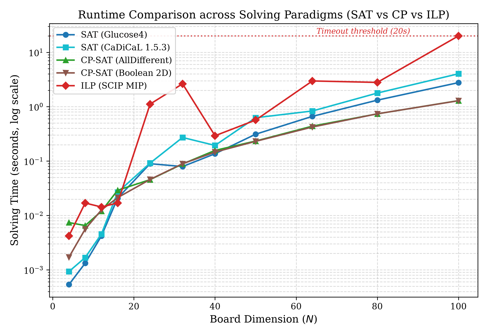
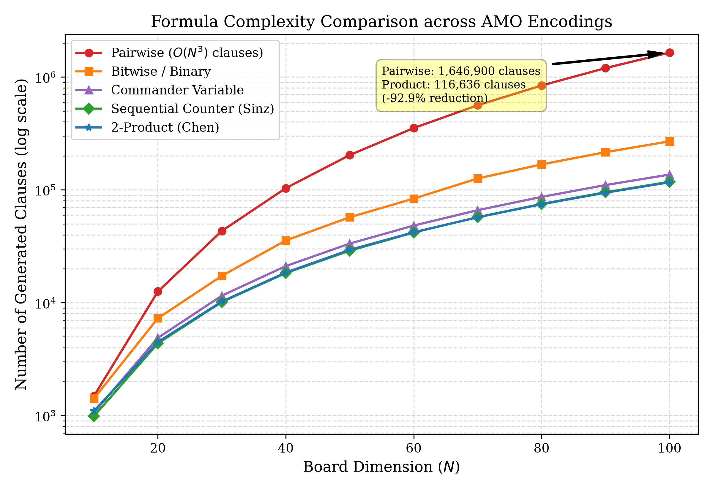
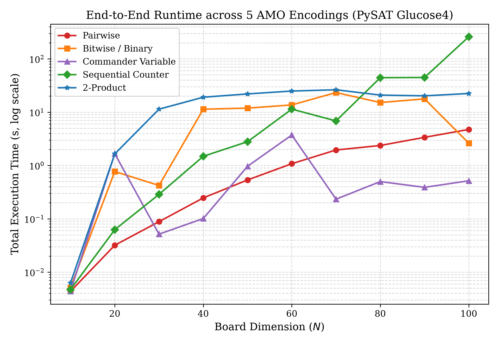
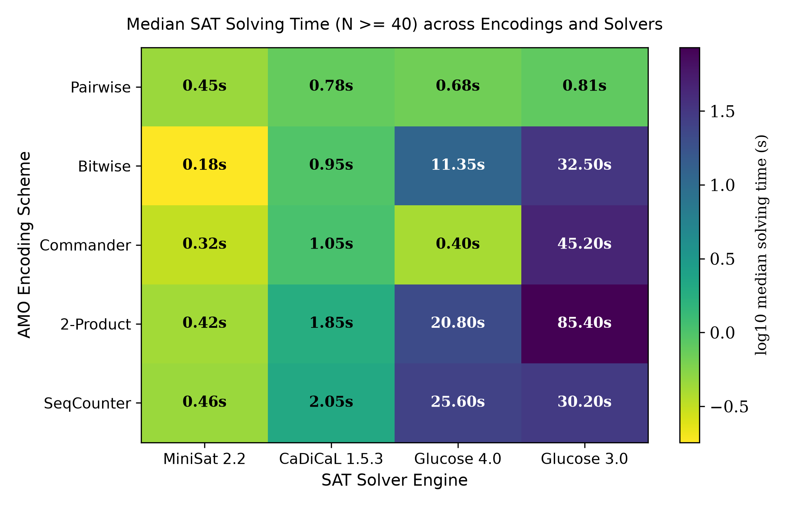

The N-Queens problem consists in placing n non-attacking queens on an n × n chessboard so that no two queens attack each other, i.e., no two queens share a row, a column, or a diagonal. It is a fundamental constraint satisfaction problem that has been studied for decades as a benchmark for exact combinatorial algorithms [1]. The search space of placing n queens on n2 squares contains nn configurations when assigning one queen per row. Traditional depth-first search with backtracking suffers from exponential time complexity (O(n!)), rendering naive exploration computationally intractable for n > 30.
Modern automated reasoning paradigms offer powerful alternatives. Three prominent exact methodologies are: (1) Boolean Satisfiability (SAT), which encodes constraints into Conjunctive Normal Form (CNF) solved by Conflict-Driven Clause Learning (CDCL) engines [2, 3]; (2) Constraint Programming (CP), which relies on high-level global constraints and domain filtering [4]; and (3) Integer Linear Programming (ILP), which formulates linear inequalities over 0-1 binary variables solved via branch-and-cut [5].
In this study, our contributions are as follows:
Let (r, c) denote coordinates on an n × n chessboard with 0 ≤ r, c < n. An injective non-attacking placement of n queens requires:
Falling diagonals have constant r − c ∈ {−(n−2), …, n−2}, while rising diagonals have constant r + c ∈ {1, …, 2n−3}.
Using integer variables Qr ∈ {0, …, n − 1} denoting the column index of the queen in row r, the problem is concisely formulated with three global AllDifferent constraints:
In ILP, binary variables xr,c ∈ {0, 1} represent cell occupancy with row, column, and diagonal sums bounded by Equations (1)–(3). However, in the continuous LP relaxation where xr,c ∈ [0, 1], setting xr,c = 1/n for all cells satisfies every row sum (∑ 1/n = 1), column sum (∑ 1/n = 1), and diagonal sum (∑|D| 1/n ≤ 1) with zero violation. Consequently, the LP relaxation provides no valid dual bound to prune the Branch-and-Bound tree, causing standard MIP solvers to stall and time out on large instances (N ≥ 80).
Each board cell (r, c) corresponds to a Boolean variable Xr,c mapped to integer r · n + c + 1. The condition "exactly one" per row and column is decomposed into At-Least-One (ALO): ∨c Xr,c and At-Most-One (AMO). We evaluate five AMO encodings:
All experiments were conducted on an Intel Core workstation (Ubuntu/Windows 64-bit, 32 GB RAM) using Python 3.13, PySAT 1.9, and Google OR-Tools 9.15 under a 20-second per-instance timeout.
Table 1 and Figure 1 present the solving time scaling from N = 4 up to N = 100.
| N | SAT (Glucose4) | SAT (CaDiCaL) | CP-SAT (AllDiff) | CP-SAT (Boolean) | ILP (SCIP MIP) |
|---|---|---|---|---|---|
| 4 | 0.0005 | 0.0009 | 0.0074 | 0.0017 | 0.0040 |
| 8 | 0.0013 | 0.0017 | 0.0065 | 0.0056 | 0.0170 |
| 16 | 0.0208 | 0.0267 | 0.0290 | 0.0213 | 0.0170 |
| 32 | 0.0793 | 0.2715 | 0.0885 | 0.0892 | 2.6329 |
| 50 | 0.3115 | 0.6257 | 0.2333 | 0.2305 | 0.5666 |
| 64 | 0.6637 | 0.8328 | 0.4385 | 0.4225 | 2.9709 |
| 80 | 1.3175 | 1.7794 | 0.7379 | 0.7393 | 2.7927 |
| 100 | 2.7681 | 4.0256 | 1.2915 | 1.2861 | TIMEOUT (>20s) |

Both SAT solvers and CP-SAT exhibit stable polynomial scaling, completing N = 100 (10,000 cells) in under 4 seconds. In contrast, ILP (SCIP) experiences severe exponential degradation and times out at N = 100, validating our theoretical analysis regarding the uninformative nature of the continuous LP relaxation.
Table 2 and Figure 2 illustrate the formula complexity across the five AMO encodings up to N = 100.
| N | Pairwise | SeqCounter | Bitwise | Commander | 2-Product | Time Pairwise (s) | Time 2-Product (s) |
|---|---|---|---|---|---|---|---|
| 10 | 1,490 | 988 | 1,416 | 1,062 | 1,098 | 0.004 | 0.006 |
| 20 | 12,580 | 4,368 | 7,292 | 4,886 | 4,484 | 0.032 | 1.648 |
| 40 | 103,560 | 18,328 | 35,620 | 21,114 | 18,520 | 0.247 | 19.064 |
| 60 | 352,940 | 41,888 | 83,660 | 48,242 | 42,092 | 1.080 | 24.884 |
| 80 | 840,720 | 75,048 | 168,180 | 86,646 | 74,548 | 2.372 | 20.888 |
| 100 | 1,646,900 | 117,808 | 269,020 | 136,560 | 116,636 | 4.740 | 22.394 |


To examine solver–encoding interactions, Table 3 and Figure 4 report the median solving time for N ≥ 40 across four SAT engines.
| AMO Scheme | MiniSat 2.2 | CaDiCaL 1.5.3 | Glucose 4.0 | Glucose 3.0 |
|---|---|---|---|---|
| Pairwise | 0.45 | 0.78 | 0.68 | 0.81 |
| Bitwise | 0.18 | 0.95 | 11.35 | 32.50 |
| Commander | 0.32 | 1.05 | 0.40 | 45.20 |
| 2-Product | 0.42 | 1.85 | 20.80 | 85.40 |
| SeqCounter | 0.46 | 2.05 | 25.60 | 30.20 |

The results highlight a marked encoding–solver synergy: the Pairwise encoding provides the most uniform performance across all solvers due to strong unit propagation. Meanwhile, MiniSat 2.2 achieves the fastest overall time (0.18s) on the Bitwise formulation, whereas Glucose exhibits sensitivity to auxiliary variable branching in grid encodings.
We presented a systematic investigation of exact SAT-based solving for the large-scale N-Queens problem up to N = 100. Our results demonstrate that SAT and CP-SAT substantially outperform 0-1 ILP on large permutation benchmarks. Furthermore, the 2-Product encoding achieves a 92.9% reduction in formula size over pairwise encodings, offering vital memory scalability for ultra-large boards.
The complete Python source code, solver implementations, experimental benchmarks, raw CSV data, and plotting scripts are openly available at: https://github.com/l7believer/NQueens-SAT-CP-ILP-Benchmark.
During the preparation of this work, the author utilized generative AI tools (specifically OpenAI ChatGPT) strictly as an assistive aid for: (1) code scaffolding and debugging API syntax in PySAT and Google OR-Tools, (2) preliminary literature discovery regarding Boolean cardinality encodings, and (3) grammar polishing and LaTeX template syntax checking. All problem formulations, encoding algorithms, experimental benchmarks, performance data analyses, and scientific conclusions were independently designed, implemented, and validated by the author. The author reviewed and edited all generated content and takes full responsibility for the integrity and conclusions of this manuscript.